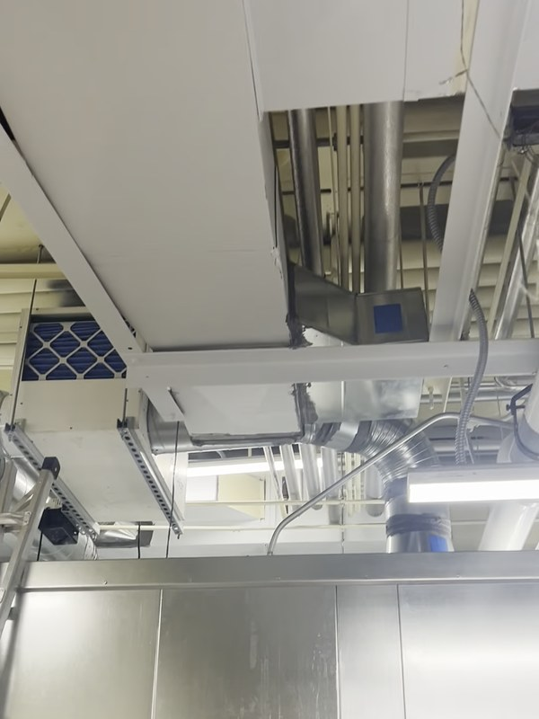
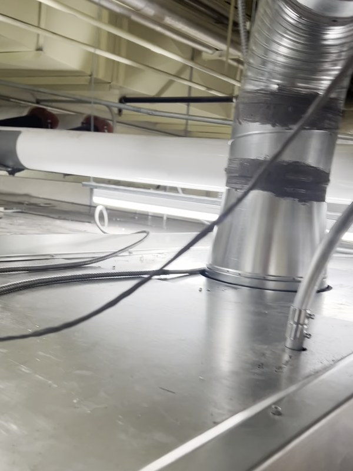
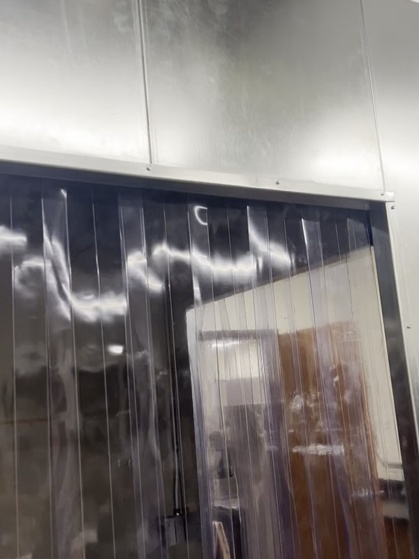
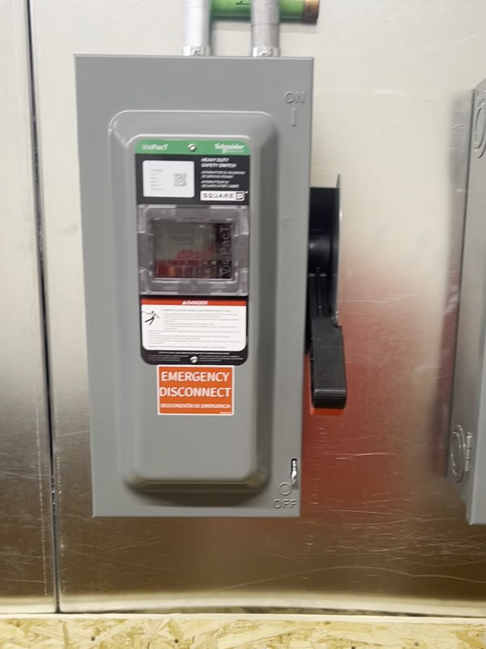
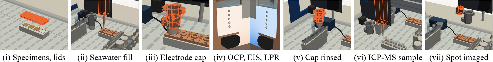

(a)

(b)

(c)

(d)

(e)

(f)

(g)
ONR FY2027 Young Investigator Program, NOFO N0001426SF004. PI: Sterling G. Baird, Brigham Young University (BYU)
PI laboratory, BYU Department of Mechanical Engineering. A 700 square foot powder metallurgy laboratory in the Clyde Building (CB 154), assigned to the PI, holds an AMAZEMET rePOWDER ultrasonic atomizer with an induction crucible module (Fig. 1b). We use the atomizer to make alloy powder from elemental and master-alloy feedstock weighed into machined cups, about four compositions per week and about 0.5 kg per run. For this project the cups are oxygen-free copper and the powders are copper alloys. They are melted at up to 1,400 °C (typically up to 1,300 °C) in graphite crucibles and atomized onto coated carbon-carbon plates. For melts that contain nickel or iron, the crucible is sprayed with boron nitride and the nozzle is boron nitride. A powder doser built in the laboratory, an open-source auger doser that weighs each dose on an analytical balance (0.1 mg), dispenses the powdered minor additions into each charge and logs every dose. Sieves (ASTM B214), a Hall flowmeter funnel (ASTM B212 and B213), glove bags and dry powder storage support the powder checks. The atomizer stands in a steel-panelled enclosure built inside the room in 2026 (Fig. 1a), with its own exhaust duct, argon supply, industrial dehumidifier, electrical and chilled-water drops, a strip-curtain door and tacky mats at the exit, so powder stays in the enclosure. The room also has a canopy hood and a fume hood. The services were installed with the college safety officer and laboratory supervisor, who reviewed the safety data sheets, the oxygen-deficiency risk of the argon supply and the shipping of metal powders through BYU Chemicals Management; a Class D extinguisher, an ATEX-rated (explosion-proof) vacuum cleaner, full-face respirators and antistatic brushes are in place. It connects directly to the BYU Electron Microscopy Facility by a door with no public access.




Powder safety practice. The laboratory's handling rules were set for aluminum alloy powders, the most hazardous case in the Bureau of Mines explosibility series, in conversations through 2026 with the powder group of Ames National Laboratory (Dr. Iver Anderson and Dr. Jordan Tiarks: isolating the collection can with a full-bore valve and opening it under inert gas, controlled passivation, run length, the Bureau of Mines data), with Professor Tim Horn of North Carolina State University (element-specific chamber deposits, cleaning and shipping classification), with the group of Professor Tim Weihs at Johns Hopkins University, which runs the same atomizer for reactive powders, with the manufacturer's installer, with Valimet, an industrial aluminum powder producer, and with the Manufacturing Futures Institute at Carnegie Mellon University (powder-room rules). Three trained operators run the atomizer; powder is handled in glove bags and stored dry in sealed containers. Copper alloy powders are far less reactive, and the same controls apply. Before any lot leaves BYU, a representative powder of each new alloy family is tested for minimum ignition energy, explosion severity and the UN N.1 and N.5 transport tests at an accredited laboratory (Fauske & Associates; in the budget), which set its handling rules and shipping class.
BYU Electron Microscopy Facility. Scanning electron microscopes with energy-dispersive X-ray spectroscopy (EDS) and electron backscatter diffraction (EBSD) (Thermo Fisher Apreo C, Helios 600 with a focused ion beam, and Verios), and a Tecnai TF-20 transmission electron microscope (Fig. 2a). The instruments are shared and have high availability. BYU subsidizes the facility, so engineering users pay a posted rate of $30 per hour on every instrument, with staff assistance included; the PI laboratory and its students are trained and pay this rate today, and the budget carries 150 hours a year.
Other BYU facilities. Metallographic preparation uses a LECO MX400 hot mounting press, PX500 automatic and PX300 manual polishers, vibratory polishers (Fig. 2c–f), an etching fume hood and an electropolisher, with a Keyence VHX-7000 digital optical microscope for inspection. We measure composition and structure at the BYU X-ray Diffraction Facility and the BYU Spectroscopic Facility (Agilent 8900 ICP-MS/MS, Fig. 2b, and XPS). The BYU Prototyping Lab machines charge cups and test specimens by CNC. Sub-size tensile tests (ASTM E8/E8M) run on the Instron load frames of the materials testing laboratory in the Department of Mechanical Engineering. We measure particle size distributions by sieve analysis in the PI laboratory and by image analysis of SEM micrographs.


Computing. The BYU Office of Research Computing operates a shared cluster of about 28,000 CPU cores and 367 GPUs on 616 nodes (rc.byu.edu, 2026), shared among BYU researchers at no direct cost. CALPHAD calculations use Thermo-Calc with its copper alloy database and the open-source pycalphad; heat-flow calculations and the search software run on the same cluster.
Directed energy deposition. Single-stream, blown-powder laser DED is not available at BYU. The project buys machine time at two facilities, and the search treats them as two steps of different cost. Neither facility is a subawardee. The small step is the InssTek MX-Lab (Fig. 3a) in the laboratory of Professor Z. Zak Fang (Department of Metallurgical Engineering, University of Utah, Salt Lake City, 45 miles from BYU), which his group has offered to the project. It has a 500 W fiber laser, 150 mm of travel on each axis, control of melt-pool height, and six powder feeders that can be run separately. It makes pre-placed tracks from a few grams of powder and blown-powder tracks, thin walls and small blocks from about 0.5 kg, on a day trip from BYU. Its use is budgeted as hourly instrument time until the group sets a rate. The large step is the FormAlloy X2 blown-powder laser DED system (Fig. 3b) at the Colorado School of Mines (ADAPT center and Shared Instrumentation Facility, Golden, Colorado), bought on a purchase order. Facility staff run it at posted external rates, $155 per machine hour and $165 per labor hour. A typical session of four 25 mm cubes takes about 3 machine hours and 2 labor hours. The X2 takes powder from 50 to 200 µm, needs about 2 kg of each powder to fill its hoppers, catches about half of the powder fed in the melt pool, and has deposited copper-nickel tracks (Fig. 3c). It builds the tensile and corrosion blocks and the repair coupons on thick plate, which need more laser power than the MX-Lab has. The United States representative of InssTek has also offered deposition within the InssTek network, which lists aluminum bronze (UNS C95300) among its qualified materials.


Corrosion testing. The electrochemical screen runs on the liquid-handling gantry in the PI laboratory (CubXL, Ursa Laboratories: a pipette, a vial capper and two cameras on a scripted gantry with about 390 × 230 × 120 mm of travel). The gantry positions small O-ring cells on polished specimens, with a NuVant EZstat Pro potentiostat lent to the laboratory by a BYU colleague, integrated into the gantry's automated workflow in October 2026 (the screen itself has not yet been run); the budget requests a dedicated potentiostat with impedance capability, a Squidstat Plus, for the screen (Equipment). Immersion tests in substitute ocean water (ASTM D1141) run in capped vials on the deck of the gantry, which samples the solutions for ICP-MS at the BYU Spectroscopic Facility. Certified chemistry of powder lots and final deposits (the alloying elements and impurities by ICP-OES and ICP-MS; oxygen, nitrogen and hydrogen by inert gas fusion; carbon by combustion) is purchased from NSL Analytical Services (Cleveland, Ohio; ISO 17025 and Nadcap accredited), the laboratory Ames Laboratory uses for its atomized powders. NSL quoted the PI laboratory's aluminum powder program in October 2026 (quotation NSLQ41278), and the budget uses those prices.


Gas atomization. The year's discovered alloy is converted into a gas-atomized lot at Ames National Laboratory (Ames, Iowa), whose powder group under Dr. Jordan A. Tiarks (an unfunded collaborator) runs gas atomizers with induction and plasma melting at scales from 10 g to 100 kg. One run a year is bought as a service, inclusive of materials, equipment time and labor; the laboratory is not a subrecipient. The gas-atomized lot is deposited at Mines beside the ultrasonic lot of the same composition, so the project measures what changes between the two routes, and it is the form in which the final candidates go to Navy engineers.

Government-owned facilities. None are required. No additional facilities will be acquired at the applicant's expense.